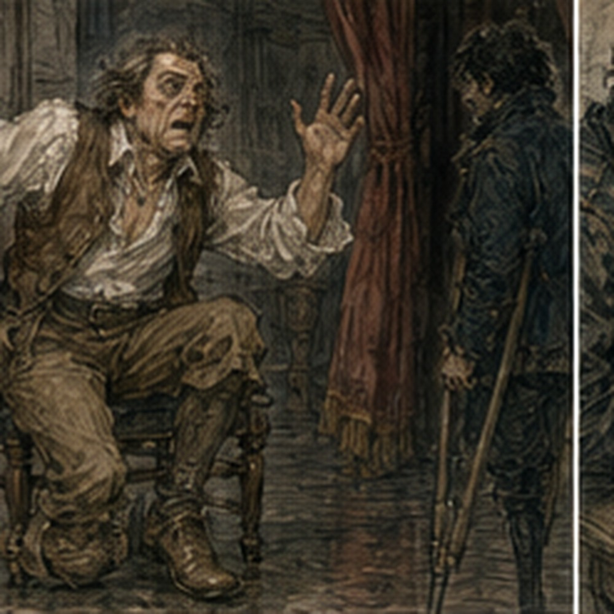

I had made a mistake. Not with magic. Different category. The sword. Specifically, the voice. I had thought the useful thing yesterday had happened when I stopped performing. That was wrong. Or incomplete. The useful thing had happened when I stopped performing the wrong thing.
There was a difference. I realized this while eating eggs. Annoying. The keeper put bread beside my plate.
“Sword.”
“No.”
“Blade?”
“No.”
“Talking furniture?”
I looked at him.
“That is closer.”
He smiled. I ate. No magic today. Hessa had prohibited all of it. Fine. My forearm remained ordinary. Also fine. The problem was my voice. Not the one I had now. That one was easy.
Nineteen. Carrow. Crutches. Too much uncertainty packed into too many new things. My current voice did not sound young exactly. Not to me. It sounded normal. That was the problem. Normal had moved. The voice from before was not normal anymore.
I could remember it. That did not mean I could simply open my mouth and produce it. I finished breakfast. Walked to the theatre.
The bread seller shouted:
“YOUR MAJESTY.”
I ignored him.
“BLADE.”

Better. Still ignored him. Inside, the servant actor was already holding the sword. He looked at me.
“Late.”
“I am not scheduled.”
“You keep saying that.”
“Because it remains true.”
Teren sat below the stage with pages. Recurring woman was pinning something to her sleeve. Soot-shirt worker had the sword's scabbard apart on a table. Not broken. Probably. I sat. The servant actor held up the prop.
“Page forty-three.”
I had thought about page forty-three while walking. Not rehearsed. Thought. Different. Probably.
The line:
SIT DOWN, IDIOT. Yesterday irritation had worked. Today I knew why. Or thought I knew why. That was dangerous. Teren pointed.
“From the stair line.”
They started. King hurt. Tries to stand. I breathed in. Wrong. Too much. I knew before I spoke.
“Sit down, idiot.”
Recurring woman looked at me.
Servant actor said:
“Sword Voice.”
“Fuck.”
Teren:
“Again.”
Reset. I tried less breath. Less preparation.
“Sit down, idiot.”
Flat. Dead.
Servant actor:
“Corpse sword.”
“Again.”
Third. I tried to find the thing from yesterday. The remembered cadence. Older me. Not old sounding. That was the trap. The man I had been had not gone around performing age. He had simply been older.
He had expected people to listen because, frequently, they had. He had known which arguments were worth having. He had been tired in ways nineteen-year-old me could remember but not naturally inhabit. He had breathed differently before speaking.
Not deeper. Later. There had been less hurry. Not because everything mattered more. Because fewer things did. I tried to put myself there. That took too long.
Teren:
“Gregory.”
“I know.”
“You missed it.”
The king was already standing. Damn. The servant actor lowered the sword.
“You disappeared.”
“I was preparing.”
“That is what disappearing is.”
Recurring woman:
“Listen.”
There. One word. Useful. Again. I did not prepare. I listened. The stair line. The king moved. His breath caught because the servant actor chose pain before standing. Different from yesterday. I heard it.
Then the weight shifted. Then the stupid attempt. The voice I wanted was not ready. Fine.
“Sit down, idiot.”
Current voice. Mostly. But I let the second word land after his movement instead of before it. The servant actor froze halfway up. Looked at the sword. Sat. Recurring woman continued. Teren did not stop.
Good.
After:
“Better,” servant actor said.
“It was not the voice.”
“No.”
“That bothers me.”
“Good.”
He reset. I stared at the page. The older voice had not appeared. But the scene worked. That was not enough. I wanted the voice. Of course I did. Next run I missed the cue again because I was trying to rebuild it.
Teren stopped.
“Gregory.”
“I know.”
“No, you don't.”
I looked at him. He tapped his ear.
“Listen.”
That was all. Everyone here had one-word religions. Again. I listened. Scene. Movement. Breath. Line. Current voice. Worked. Again. Worked worse. Again. Better. None sounded like before. At break I asked for water. Servant actor handed it over.
“You are doing a face.”
“What face?”
“Dead accountant.”
“I was never an accountant.”
“Then whoever you were.”
I stopped. He drank from his cup. I looked at him.
“What?”
“Nothing.”
“Gregory.”
“No.”
He waited. I hated that everyone had become good at waiting.
“I am trying to remember how I used to sound.”
He nodded like this made ordinary sense. Maybe for actors it did.
“Before what?”
“Before here.”
“Carrow?”
“Yes.”
True enough. He leaned back on his hands.
“What did you sound like?”
I opened my mouth. Nothing useful.
“Normal.”
He laughed.
“No.”
“That is the problem.”
“What?”
“It was normal then.”
“And now?”
“This is.”
I heard my current voice say it. Nineteen. Not high. Not childish. Just mine. Now. The old one had been mine too. That was the problem. Two normals. Only one automatic. Servant actor picked up the sword.
“Do it.”
“I cannot just do it.”
“You did once.”
“Accidentally.”
“Then accident again.”
“That is not how anything works.”
“Acting seems to.”
I looked at him. He grinned. Fuck him. I closed my eyes. Not dramatic. Just removing the stage. Old office. No. Wrong. Too specific. Old kitchen. No. Hospital corridor. No. Too much memory. The voice was not a place.
It was a whole arrangement. Breath. Attention. Expectation. How much time I thought I had. How much nonsense I was willing to tolerate. What I assumed about the person in front of me. How tired I was before the conversation even began.
How certain I was that I could leave if I wanted. The weight of decades that were not in this body. My shoulders changed. I noticed. Stopped. Too deliberate. Again. I breathed out. Let my chest settle.
Not older. Not deeper. Less forward. The servant actor was watching.
“That.”
“What?”
“You moved.”
“I know.”
“Do line.”
“No scene.”
He held the sword upright.
“Pretend.”
“No.”
“Coward.”
Fine. I looked at him. Not as servant actor. Not as friend. Not as idiot. As someone who had asked me the same avoidable question twice and was about to ask it a third time.
There. Tiny. Familiar. Unpleasant.
“Put the sword down.”
He did. Immediately. Then stared. I stared back.
Recurring woman, from behind us:
“That was different.”
I turned too fast. Gone. Completely.
“Fuck.”
She smiled.
“Again.”
“No.”
“Yes.”
“I lost it.”
“Find it.”
Not helpful. Exactly helpful. I tried. Could not. I made my voice lower. Wrong. Slowed it. Wrong. Tried the face. Servant actor laughed.
“Dead accountant.”
“Fuck you.”
Gone. At least that was current me. Teren called break over. Page forty-one. Different scene. Comic threat. Great. I had not solved anything. Good. We ran it. First line too young. Not actually young.
Too immediate. The sword sounded like Greg insulting the king. Second attempt I manufactured oldness. Bad.
Recurring woman:
“You are wearing age.”
“What?”
“I can hear you wearing it.”
“That is not possible.”
“It is.”
Servant actor nodded.
“Very expensive age.”
“Fuck both of you.”
Teren:
“Again.”
I stopped trying to sound old. Instead I tried to rebuild the mental position. The king had dropped the sword. Again. The sword had warned him before. Probably. The line assumed repetition. That helped.
Not ancient. Not legendary. Tired of this specific idiot. I listened to the servant actor fumble the scabbard. He actually fumbled it. Not planned. The sword knocked against his knee. He hissed. Perfect. I did not hurry.
“If you drop me again, I will arrange for your heirs to be stupider than you.”
The servant actor looked at the sword. Not me. Recurring woman laughed.
Teren:
“Keep.”
I felt it. Not exact. Closer. The old cadence was there. But only because I had built the state under it. Breath first. Not a special breath. Permission to take the time. Then attention.
Not to the line. To the idiot. Then expectation. I did not need him to believe me. I assumed he would. That changed the line. I wanted to write this down. Dangerous.
Teren:
“Again.”
I tried to preserve it. Failed. Too controlled. The line came out polished.
Recurring woman:
“Gone.”
“Yes.”
“Again.”
This time I did not rebuild enough. Too current. Servant actor reacted late. Again. Too old. Again. Too amused. Again. Closer. Again. My throat started drying. Water. No heroics. I drank. The soot-shirt worker came over with the scabbard.
She had changed the inside lining.
“Try.”
Servant actor sheathed the sword. Draw. Less scrape. He drew again. Better. I watched.
“Why?”
“Sound was wrong.”
“What was wrong?”
“Too dry.”
“It is wood.”
“Yes.”
“Onstage legendary.”
She looked at me.
“You are becoming annoying.”
“Becoming?”
She left. Servant actor drew again. The cleaner sound changed his movement slightly. Less fighting the scabbard. The sword appeared more deliberate because the actor was not wrestling it. Interesting. Not my problem. Also absolutely my problem.
Teren called page forty-two. Draw scene. The line. Little king. I listened. The servant actor's new draw was smoother. He looked at the blade. I waited. Old state. Not old voice. The irritation was not right for this one.
This sword had just been awakened. It was not tired of him yet. Maybe disappointed in advance. That was different. I almost missed the line thinking that. Caught it.
“You have drawn me, little king. Try not to embarrass us both.”
Good. Not great. Recurring woman looked at sword. Servant actor gave me something back. A small offended lift of the chin. The next line came easier. Not because the voice was ready. Because he was.
That mattered. We ran it again. Different. Still same sword? I did not know. That bothered me. At break I found Teren.
“What is consistent?”
He looked up.
“What?”
“The sword.”
“Yes.”
“What has to stay the same?”
He thought for maybe one second.
“Enough.”
I hated him.
“That is not an answer.”
“It is mine.”
“What is enough?”
He pointed to the stage.
“If I know who spoke before I look at the page.”
“That could just be the actor reacting.”
“Yes.”
“Or timing.”
“Yes.”
“Or the line.”
“Yes.”
“Then voice does not matter.”
“It matters.”
“How?”
“Gregory.”
“What?”
“Go do it.”
That was not an answer either. Fine. I went back. The servant actor had the sword balanced across his knees. He tapped the pommel.
“You're thinking too loud.”
“I am not speaking.”
“Exactly.”
“Fuck you.”
He smiled.
“Same sword.”
“What?”
“That.”
“Fuck you?”
“No. You.”
I stared. He shrugged.
“When you're trying to make it the sword, it changes too much.”
“So it should sound like me.”
“No.”
“Then what are you saying?”
“I don't know.”
Excellent. We were surrounded by professionals. Recurring woman joined us.
“He means stop replacing yourself.”
I looked at her. That was dangerously close to useful.
“I am nineteen.”
“Yes.”
“The sword is not.”
“Yes.”
“My normal voice is wrong.”
“Maybe.”
“It is.”
She shrugged.
“Then use something else.”
“I am trying.”
“I know.”
“Badly.”
“Yes.”
Servant actor laughed. I pointed at him.
“You too.”
“What did I do?”
“You keep changing how you hold it.”
“Because scenes change.”
“That is my point.”
“No, that is my point.”
We argued for five minutes. No winner. Good. Then Teren called us. Last run before lunch. Page forty-one into forty-two. Longer sequence. Several sword lines. Consistency problem. Perfect. I sat. Water. Pages. Servant actor ready.
I did not try to find old me before the scene. That was the change. I listened. Door knock. King ignores. Sword insults heirs. I let the old cadence arrive from the circumstance. Not all of it.
Enough. Next line. Different beat. Still same general presence. Then minister scene.
“He is lying.”
I almost made it ominous. Stopped. Listened. The minister had just overexplained. The sword did not need menace. It knew.
“He is lying.”
Servant actor glanced at blade. Minister challenged.
“Because you breathe differently when you lie.”
This line wanted certainty. Not age. Not irritation. Certainty. But the old normal had contained that too. Not magical certainty. Social certainty. The kind built from decades of watching people lie badly. I reached for that memory.
Too hard. The line delayed.
Teren:
“Gregory.”
Missed. Fuck. Again. I listened. This time I did not reach for decades. I let the actor's bad lie be enough.
“He is lying.”
Challenge.
“Because you breathe differently when you lie.”
Worked. Smaller. Cleaner. Recurring woman kept eyes on blade. Good. Then draw. Little king. I shifted mental state too late. The sword sounded annoyed instead of superior. Servant actor reacted as though scolded. Scene bent wrong.
Teren stopped.
“Again from draw.”
Again. Better. Again. Worse. Again. Better. By lunch I was exhausted in a strange way. Not physically much. Throat used. Brain tired. Holding the old state was work. Manufacturing it was more work. I could not simply become the man I remembered.
That man had existed in a body with different habits, different lungs, different assumptions, different years behind him. He had not needed to remember how long to wait before answering someone. He had waited because that was how he answered.
He had not placed his breath. His breath had arrived where decades had put it. He had not manufactured the weight behind a look.
People had already given it to him, one year and one argument and one responsibility at a time. I remembered the result. I did not own the process anymore. Now I had to build the result backward.
If I wanted the old pause, I had to choose not to fill it. If I wanted the old cadence, I had to hold my breath in a place that did not feel natural until the sentence had room.
If I wanted the old certainty, I had to put myself mentally above the immediate need to be believed. And if I tried too hard, all of it became visible. A nineteen-year-old boy wearing a dead man's posture.
Bad. Very bad. I had the memory. Not the automatic machinery. That distinction felt cruel. Also useful. I did not tell anyone. At lunch the servant actor dropped beside me.
“Old man tired?”
I looked at him. He froze. Then smiled slowly.
“There.”
I had done it by accident again. Or not accident. I was actually tired of him. Perfect condition.
“Fuck you,” I said.
Current voice. Gone. He laughed so hard he choked. Good. I drank water. No magic today. Tomorrow Hessa. Today sword. Both required more work than remembering how they were supposed to feel. I did not say that either.
The sword sat across from me on another chair. Wood. Silver paint. Red stone. Ridiculous. I looked at it.
“Same problem,” servant actor said.
“What?”
“You're staring at it like it owes you money.”
“It does.”
“How?”
“I have invested time.”
“That is not how swords work.”
“Apparently neither is anything else.”
He took another bite. I looked at the prop. The old voice was not hidden inside me. It was not a switch. It was a construction. Breath. Cadence. Attention. Expectation. Presence. Mental position.
And even if I built all of that correctly, the actor could change one beat and make the line need something else. Excellent. Terrible. I wanted another run.